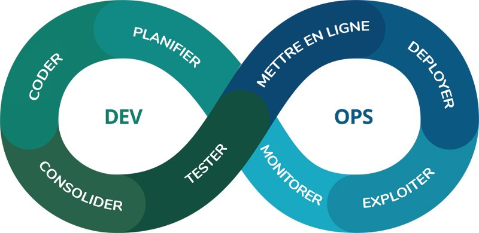

|  | Un ingénieur DevOps est un technicien informatique généraliste qui doit parfaitement maîtriser le développement et les opérations, y compris la programmation, la gestion de l'infrastructure, l'administration système et les chaînes d'outils DevOps |